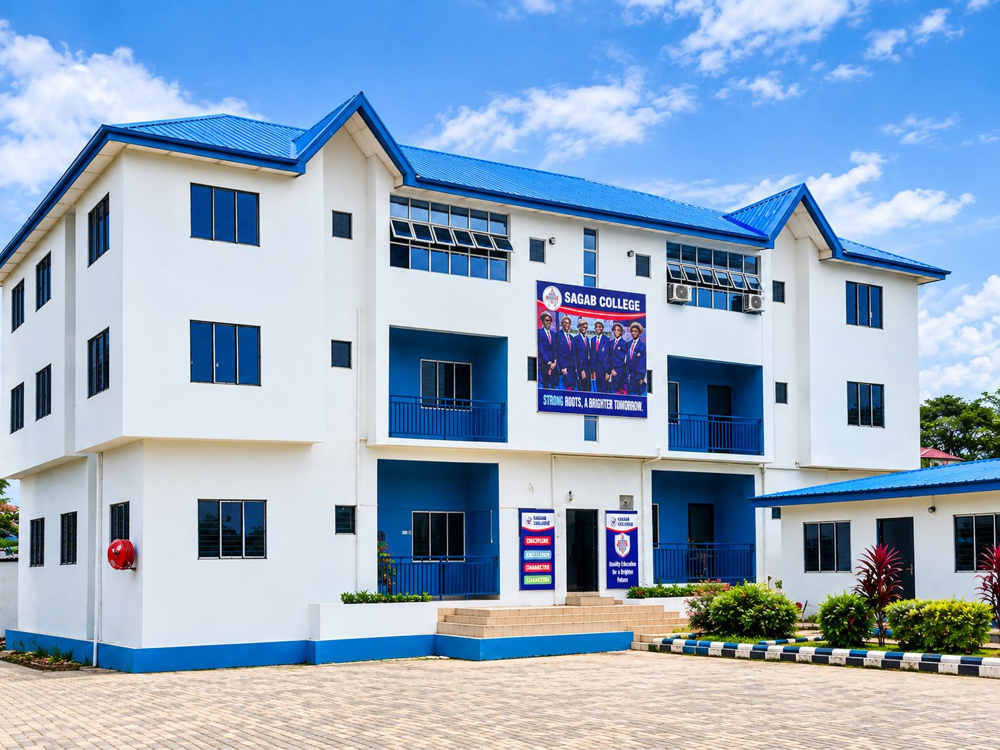
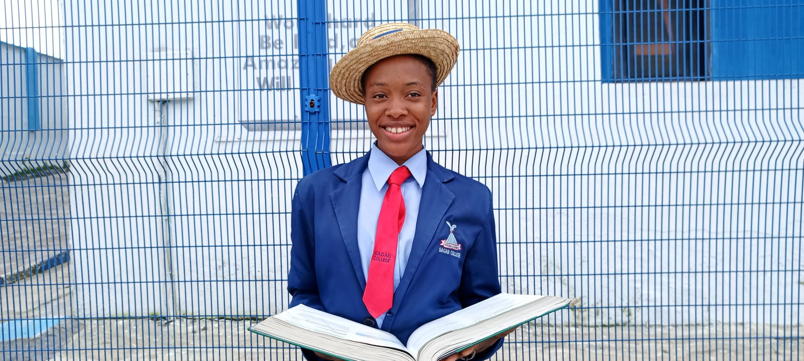
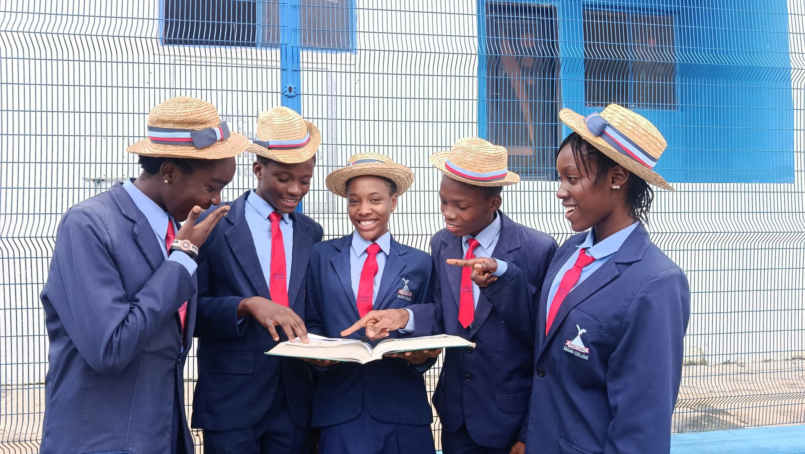

Excellence since 2005
A school where every learner can discover what is possible.
Sagab Schools is a private school in Solomade Estate, Ikorodu, Lagos, founded in 2005 by Dr. (Mrs.) Beauty O. Obodo. It brings together Sagab College for junior and senior secondary students and Sagab Montessori School for nursery and primary pupils.
Our educational philosophy is simple: excellent education should develop every learner academically, morally and socially. Through structured learning, practical education, discipline, guidance and counselling, and a close partnership with parents, we help children build the knowledge, character and confidence to fulfil their unique potential.
Read our story
A remarkable beginning
From six students to a thriving school community.
Sagab began in 2005 with six students and a clear conviction: excellent education should shape both the mind and the person.
The school was conceived in March 2005 by Dr. (Mrs.) Beauty O. Obodo, an educator trained in Biology education and in measurement and evaluation (Msc.), with a PhD in Guidance and Counselling. Lessons began on 10 October 2005 in a rented, uncompleted building at Plot 17, Abiodun Ogunleye Street, Solomade—a truly humble beginning.
The College grew to 25 students by its second session, 75 by its third and about 400 today. With the support of the Solomade community, the school acquired 12 plots of land and in 2011 moved to its permanent site at Plot 40/50, Bolajoko Oruku Street, off Odumbo Street, Solomade Estate, Ikorodu, Lagos State. Sagab Montessori School followed in the 2015/2016 session.
We do more than prepare students for examinations. We prepare them to learn, lead and excel.
Our development
Milestones since 2005.
From the first entrance examination to full government approval, each step reflects a steady commitment to standards.
What guides us
A clear purpose, lived every day.
Our vision, mission and values connect academic ambition with the character needed to use knowledge well.
To be the foremost institution producing young secondary school leavers of ‘class’, with excellence in academics and every other area of life.
To provide qualitative education at the highest standard, leading to the self-actualisation of each individual’s unique potential in a dynamic society.
Our core values
The standards that shape a Sagab student.
- Fear of God
- Hard Work
- Discipline
- Obedience
- Integrity
- Excellence
Leadership
Led with experience and care.
Sagab Schools is led by its founder and Proprietress, Dr. (Mrs.) Beauty O. Obodo, and guided by a Board of Governors chaired by Prof. J. O. Obodo.
Proprietress
Dr. (Mrs.) Beauty O. Obodo founded Sagab in 2005 and leads quality assurance in curriculum, teaching and academic standards.
Board of Governors
Eight governors bring strategic, financial, legal and digital-learning expertise to the school’s direction.
Our staff
Dedicated teachers and support staff across the Montessori, College and Operations & Support teams.

Academic confidence
Strong preparation. Successful examination outcomes.
Sagab College has presented candidates for the JSCE since 2007 and the WASSCE since 2010, building a record of strong results through purposeful teaching, consistent practice and close academic support.
The College is fully approved by the Lagos State Ministry of Education and accredited by WAEC and NECO. Our graduates have gone on to study medicine, mechanical engineering, pharmacy, law and accounting at respected institutions of higher learning.
One continuous journey
A strong foundation. A confident future.
From the curiosity of the Montessori years to the focus of senior secondary school, learners are known, challenged and supported at every stage.

Sagab Montessori School
Opened in the 2015/2016 session beside Sagab College, our nursery and primary school gives children a caring start, building strong foundations, independence and a lasting love of learning.

Sagab College
Junior and senior secondary education since 2005, with rigorous academics, practical learning and mentoring that prepare students for the JSCE, WASSCE, NECO and life beyond school.
Start your Sagab journey
Come and see where your child can learn, lead and excel.
Explore our academic programme, begin an application or speak with the school team to arrange a visit.
Begin admission Schedule a school visit